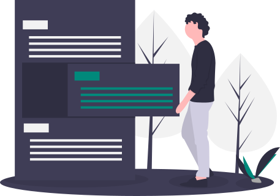
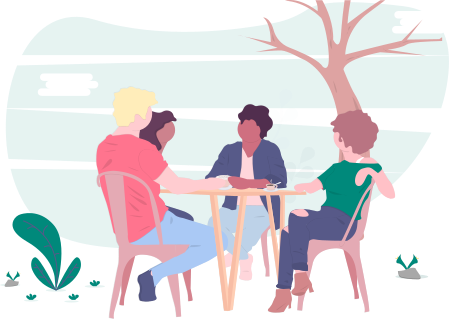

Find your life meaning
Focus on the Essentials
Find your values
Grow
Organize
Do what matters
Find answers
Growth is more than doing more.
Essentialism will help you grow as a person. Doing more of what is important to you and less of what is wasting your time.
Do better. Be better.

Organizing your life should be a top priority. Essentialism will help you create a system to keep all of your activities in check and even help you get rid of those things that are wasting your time.

Stop wasting time with things what don’t matter. Focus on the things that bring you happiness and joy. Spend your time the way you want to. Don’t be controlled by all the noise in your life.
Find the answers you have been searching for with essentialism. What is important to me? How can I stop doing all these things? Once you identify your values, it’s so much easier to focus on what is really important in your life.
Find us on:
Essentialism 2019. All rights reserved.